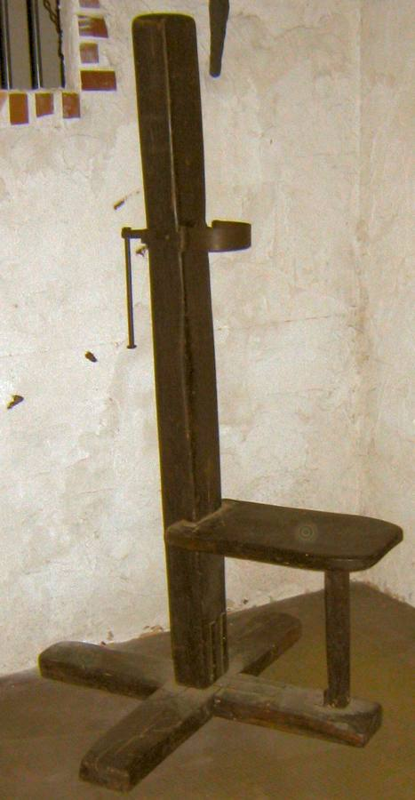

La evolución
- 1764
Beccaria publica Dei delitti e delle pene (De los delitos y las penas): el castigo debe ser útil y proporcionado, no cruel. - 1811
Las Cortes de Cádiz abolieron la tortura en los juicios. - 1932
El Código Penal de la República la suprime. Se recupera poco después. - 1974
Últimas ejecuciones con garrote vil. - 1975
Últimos fusilamientos, el 27 de septiembre. - 1978
La Constitución la abole, salvo lo que dispongan las leyes militares en tiempo de guerra (art. 15). - 1995
Se elimina también del Código Penal Militar.
Las dos posturas
A favor, según sus defensores
- Castigo proporcional a los crímenes más graves
- Efecto disuasorio
En contra, según sus críticos
- Un error judicial no tiene remedio
- No hay pruebas claras de que disuada más que la cárcel
- Va contra la dignidad humana
Para pensar
¿Por qué algo que se consideró justo durante siglos hoy lo prohíben todos los países de la Unión Europea?